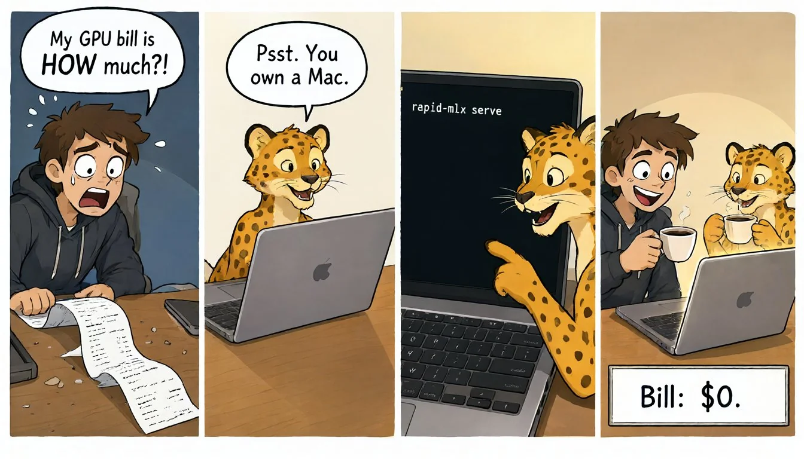
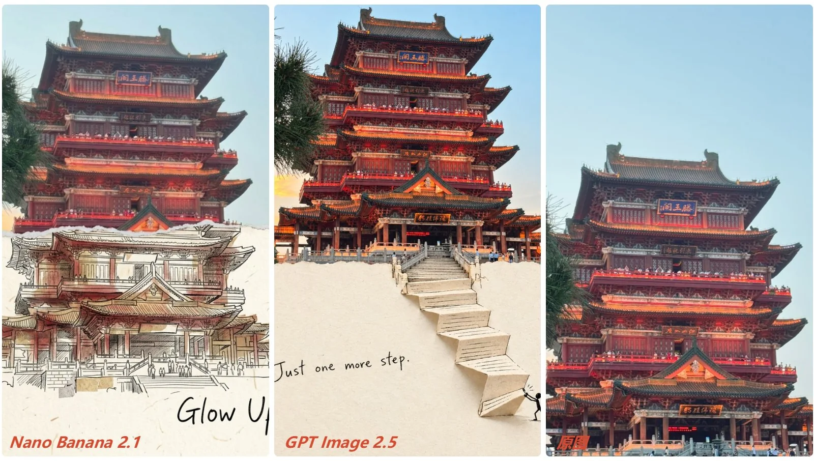

AI 生图模型追踪
共 5 条模型动态、8 个精选案例 · 最近更新（UTC）：2026-10-10T04:20:00Z
最新模型动态
- Alibaba QwenQwen-Image-2.1-Turbo 2026-10-09Qwen-Image-2.1-Turbo: open-weights accelerated checkpoint of the 7B Qwen-Image-2.1 - generate and edit in 8 denoising steps (vs ~40)
- MidjourneyMidjourney thinking mode (alpha test) 2026-10-08Midjourney testing a 'thinking mode' for image generation on alpha.midjourney.com (better prompt accuracy, typography, coherence); separately (Oct 10) recruiting a limited community to test a Midjourney MCP
- GoogleNano Banana 2.1 2026-10-06Nano Banana 2.1: new Gemini image gen/edit model - better visual design, mask-based editing, subject consistency, bug fixes, lower price; rolling out to Gemini app, AI Mode, AI Studio/API, Flow, Stitch, Ads, Gemini Enterprise
- Black Forest LabsFLUX 3 Image 2026-10-01FLUX 3 Image launched: unified T2I + editing, pixel-preserving multi-turn edits, bounding-box (JSON) layout, up to 10 references, native up to 4K; BFL API/Playground; open weights 'coming'
- IdeogramIdeogram 4.5 2026-09-30Ideogram 4.5: 'most precise edit model' - no artifact build-up across multi-turn edits; app + API + partners; open weights 'soon'
最新精选案例 全部 →

Qwen-Image-2.1 running locally on a Mac: 4-panel comic with clean text
@rapidmlx · 2026-10-08 · 无提示词

'Second World' photo-to-poster edit of Tengwang Pavilion travel photo (Chinese)
@xueyu1125 · 2026-10-07 · 有提示词
Physics 'torture test': refraction of a pencil in water next to a wine glass
@AnkanXplorer · 2026-10-07 · 无提示词
Hand-carved wooden tractor: macro image prompt + 15s time-lapse video prompt
@ItsDrShabbir · 2026-10-07 · 有提示词

Anime character 'Gemini-chan' at Enoshima station: Images 2.5 vs Nano Banana 2.1 (Chinese)
@zane_os · 2026-10-07 · 无提示词
Comfy Cloud test: off-center editorial portrait composition across 3 new models
@VIBEQUIRKLABS · 2026-10-06 · 有提示词

'Guess the model' 8-way comparison on one cinematic fashion prompt
@ai_artworkgen · 2026-10-05 · 有提示词
Identity-locked B&W fashion portrait from a character sheet (GPT Image 2.5)
@TheVirtualMuse · 2026-10-05 · 有提示词